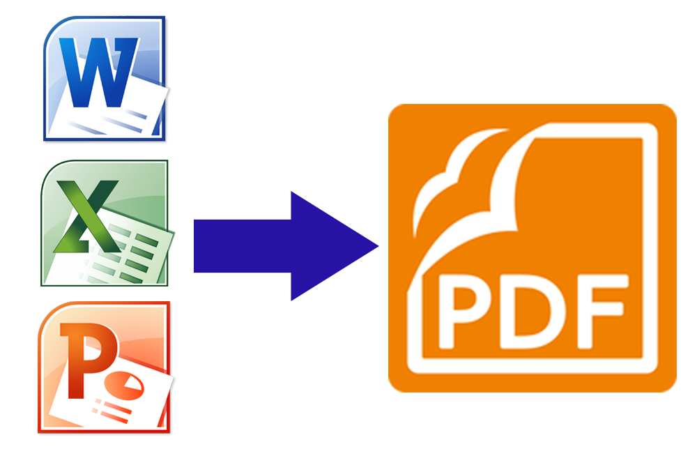

Giới thiệu
-
Trong công việc hàng ngày, nhiều lúc chúng ta cần chuyển đổi văn bản từ các file dạng word, excel, powerpoint,.. sang định dạng pdf. Văn bản pdf là viết tắt của Portable Docunment Format là một định dạng tập tin văn bản tài liệu khá phổ biến của hãng Adobe System, pdf hỗ trợ văn bản thô (text) với rất nhiều kiểu chữ khác nhau, hình ảnh đồ họa đa dạng, âm thanh cùng với rất nhiều các hiệu ứng văn bản khác.
-
Hiện nay, đã có rất nhiều hình thức, công cụ để chuyển đổi các định dạng word, excel, powerpoint,.. sang định dạng pdf, bạn có thể chuyển đổi trực tuyến hoặc sử dụng phần mềm hỗ trợ. Tuy nhiên, để hiểu hơn về cách các ứng dụng đó hoạt động, mình sẽ xây dựng một ứng dụng đơn giản, thực hiện việc chuyển đổi các định dạng văn bản như word, excel, powerpoint,.. sang định dạng pdf.
-
Ứng dụng này được xây dựng và phát triển dựa trên một dự án mà mình từng tham gia khi còn đang là thực tập sinh tại khối VCCloud thuộc Công Ty Cổ Phần VCCorp, đó là xây dựng hệ thống xem trước (preview) file văn bản cho webmail , ngày ấy được sự giúp đỡ chỉ bảo tận tình của các anh trong team dev, mình mới hoàn thành một API tạm gọi là hoàn chỉnh các chức năng trong thời gian hai tháng, khoảng thời gian phát triển ứng dụng giúp mình học được nhiều kiến thức từ những khái niệm về API, Docker, Unittest, sử dụng các công cụ như Postman, Git,.. giúp mình vững tin hơn trên con đường code sau này.
Tổng quan ứng dụng
- Cụ thể, về mặt ngôn ngữ mình dùng Python để phát triển phần ứng dụng phía backend, framework dùng cho web service là FLask, một python web micro-framework. Flask rất đơn giản, giúp cho người mới học dễ tiếp cận và có thể xây dựng website một cách nhanh chóng. Flask đưa ra cho người phát triển những thứ thực sự cần thiết để xây dựng một web api và khả năng mở rộng để có thể kết hợp với các thư viện bên ngoài vì vậy người phát triển cũng hiểu rõ ứng dụng của mình hơn do họ phải tự quản lý những thư viện, gói phần mềm nào cần thiết phải đưa vào ứng dụng.